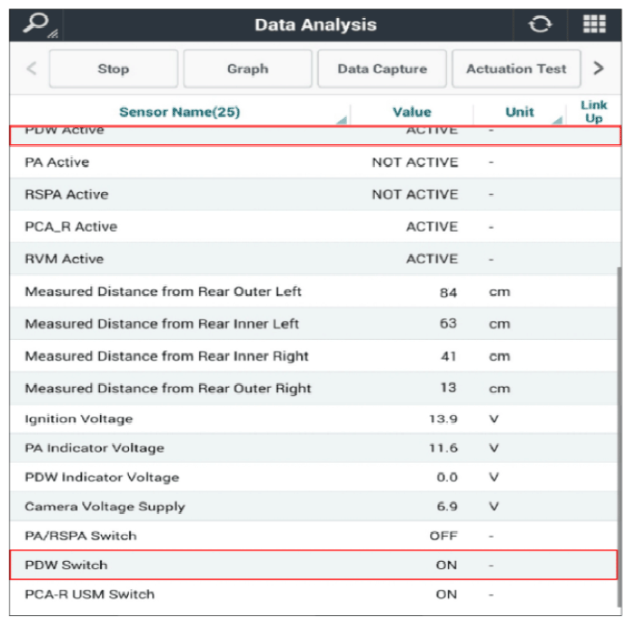

LEMON Manuals
: Even more car manuals for everyone: 1960-2025
Home
>>
Hyundai
>>
2022
>>
Elantra N Line, Standard Trans
>>
Repair and Diagnosis
>>
Accessories & Equipment
>>
Drivers Assistance Systems - ADAS
>>
Advanced Driver Assistance Parking System Diagnosis (Except HEV)
>>
DTC C1530-11: PDW Switch Failure
>>
DTC Information And Inspection
>>
Monitor Current Data
Monitor Current Data
Plug GDS to Data Link Connector (DLC).
Start the engine.
Select "PDW Active" on "Current Data".
Monitor if the value changes while turning the "PDW (Parking Distance Warning) switch" on and off.

Courtesy of HYUNDAI MOTOR AMERICA